Apa Itu DNS?
Domain Name System adalah suatu metode untuk mengkonversi IP address (numerik) sutau komputer ke dalam suatu nama domain (alphabetic), ataupun sebaliknya. Dengan adanya sistem tersebut, memudahkan kita dalam mengingat komputer tersebut. Misalnya, server Debian memiliki IP Address 192.168.20.1, namun pada umumnya orang tidak akan mudah mengingat IP address dalam bentuk numeric tersebut. Dengan adanya DNS Server, kita bisa mengakses halaman situs dari server Debian tersebut hanya dengan mengakses nama domain-nya, tanpa mengingat IP address dari komputer tersebut.
Pada tutorial konfigurasi DNS server pada debian 10 ini, akan digunakan konfigurasi IP Address sebagai berikut:
Domain : www.tkj.com
Instalasi bind9 dan dnsutils
bind9 (Berkeley Internet Name Domain versi 9) adalah salah satu aplikasi linux yang sangat populer sebagai DNS Server, dan hampir semua distro linux menggunakannya. Selain itu, dalam konfigurasinya pun cukup mudah dimengerti, khusunya bagi pemula awal.
Langkah-Langkah Konfigurasi
1. Login ke debian dengan menggunakan user root dan setelah itu kita setting IP untuk server terlebih dahulu dengan mengetikkan perintah nano /etc/network/interfaces
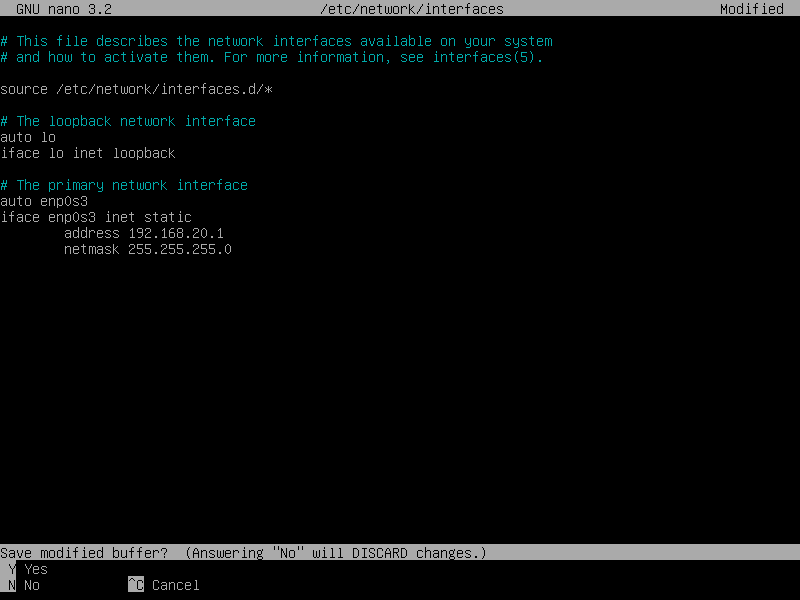2. Jika sudah, restart IP dengan perintah /etc/init.d/networking restart. Dan cek konfigurasi IP sudah berhasil atau belum dengan perintah ip a.
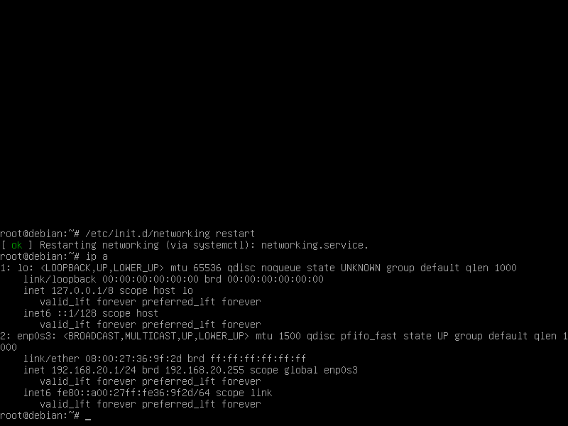3. Jika berhasil, maka langkah selanjutnya masukkan DVD 2 dan install bind9, dengan perintah apt-get install bind9. Jika ada pertanyaan [y/n] klik Y kemudian enter
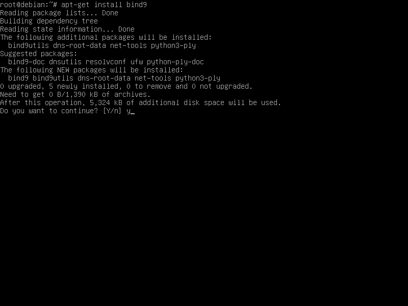4. Jika terjadi error seperti gambar dibawah ini, jangan panik. Kita ketikkan perintah apt --fix-broken install. Tetapi jika tidak ada berarti instalasi berhasil.
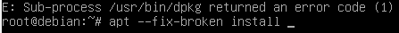5. Kemudian ada perintah untuk memasukkan DVD binary 1 seperti gambar dibawah ini, masukkan DVD binary 1 kemudian enter.
> 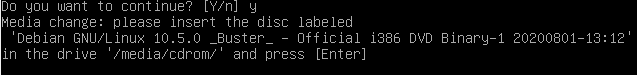6. Untuk memastikan instalasi sudah berhasil atau belum kita ketikkan ulang perintah apt-get insatll bind9. Jika ada keterangan 0 upgrade, 0 newly installed, 0 to remove and 0 not upgraded. Seperti gambar dibawah ini berarti instalasi telah berhasil.
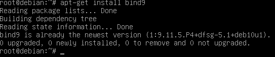7. Kemudian masuk ke directory bind dengan perintah cd /etc/bind.
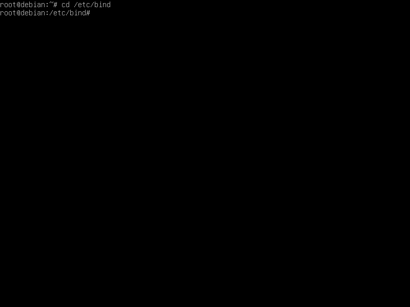Berikut file-file penting yang akan kita konfigurasi dalam DNS Server
a. File forward
b. File reverse
c. named.conf.options
d. named.conf.local
e. /etc/resolv.conf
8. Membuat file forward, dengan cara copy file db.local dengan perintah cp db.local db.tkj. kemudian konfigurasi file db.tkj dengan perintah nano db.tkj. Lakukan konfigurasi seperti gambar dibawah ini.
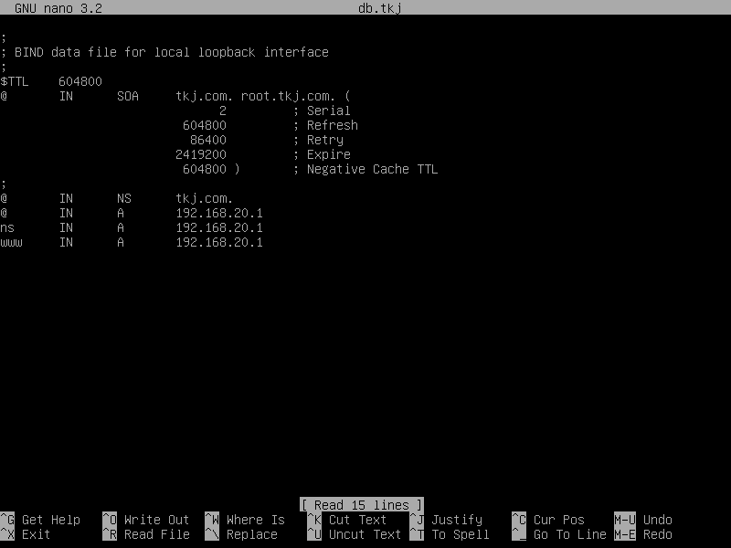File forward berfungsi untuk konversi dari DNS menjadi IP Address. Misalnya www.tkj.com melalui Web Browser, maka akan muncul website dari server debian.
9. Kemudain membuat file reverse, dengan cara copy file db.127 dengan perintah cp db.127 db.192. kemudian lakukan konfigurasi pada file db.192 dengan perintah nano db.192, lakukan konfigurasi seperti gambar dibawah ini.
Reverse berfungsi untuk konfersi IP Address menjadi DNS. Misalnya jika kita mengetikkan ip address http://192.168.20.1 pada web browser, secara otomatis akan redirect ke alamat www.tkj.com.
10. Kemudian membuat Zone Domain. Edit tambahkan konfigurasi untuk forward dan reverse pada file named.conf.options dan named.conf.local.
Kemudian langkah kedua kita konfigurasi named.conf.local dengan perintah nano named.conf.local. kemudian tambahkan konfigurasinya seperti gambar dibawah ini yang diberi tanda kotak merah.
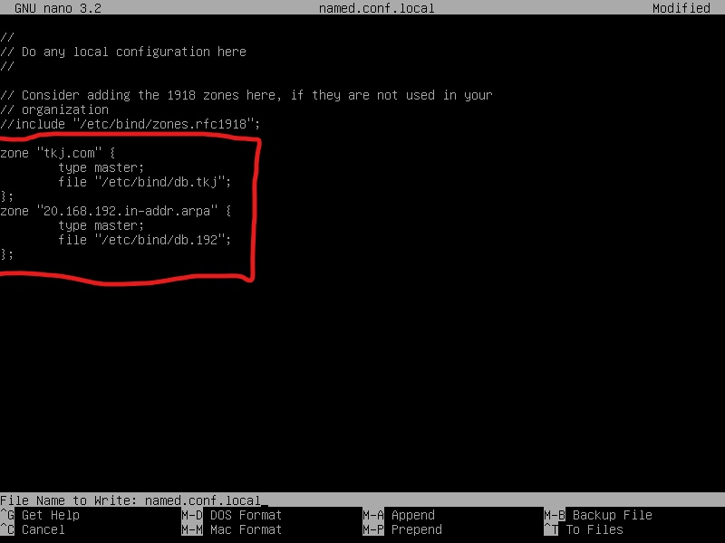Bagian ini adalah yang terpenting, kita akan menentukan nama domain dari server debian. Kita boleh membuat zone domain menggunakan TLD (Top Level Domain) hanya pada jaringan local (tanpa koneksi internet). Karena sudah ada organisasi khusus mengatur domain TLD tersebut, contohnya PANDI (Pengelola Name Domain Internet Indonesia)
11. Menambah dns-name server. Tambahkan dns dan nameserver dari server Debian tersebut pada file resolv.conf. agar dapat diakses melalui komputer kita. Ketikkan perintah nano /etc/resolv.conf. Lakukan konfigurasi seperti gambar dibawah ini.
.PNG)
12. Setelah selesai konfigurasi restart bind9 dengan perintah /etc/init.d/bind9 restart. Jika sudah OK berarti sudah berhasil. Jika belum silahkan teliti lagi pada konfigurasi network atau konfigurasi debiannnya.
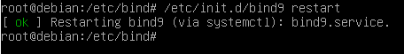13. Sebelum melakukan pengujian DNS Server nya, kita install terlebih dahulu dnsutils dengan perintah apt-get install dnsutils. Jika ada pertanyaan [y/n] tekan Y lalu enter.
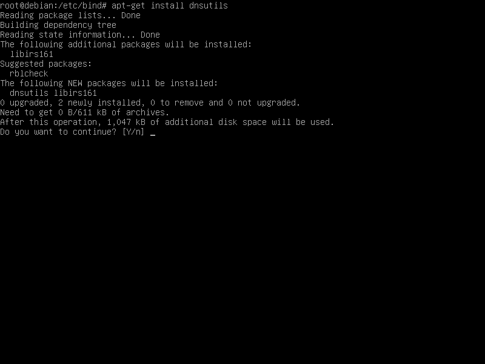14. Kemudian lakukan pengujian dengan perintah nslookup tkj.com dan nslookup 192.168.20.1. jika berhasil maka akan seperti gambar dibawah ini.
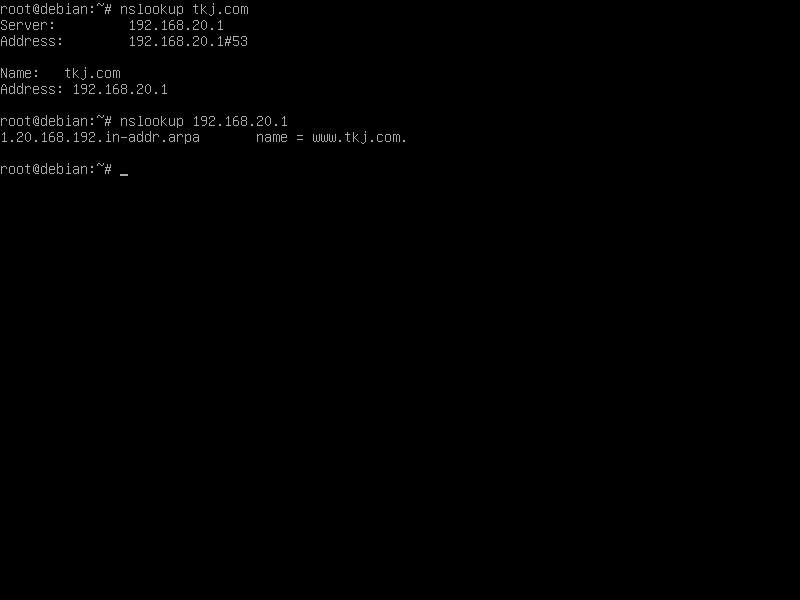15. Kemudian kita coba lakukan ping dari PC host, langkah pertama atur ip terlebih dahulu pada PC host/client pada bagian Host-Only Adapter. Dan pastikan untuk network Server debian-nya Host-Only Adapter.
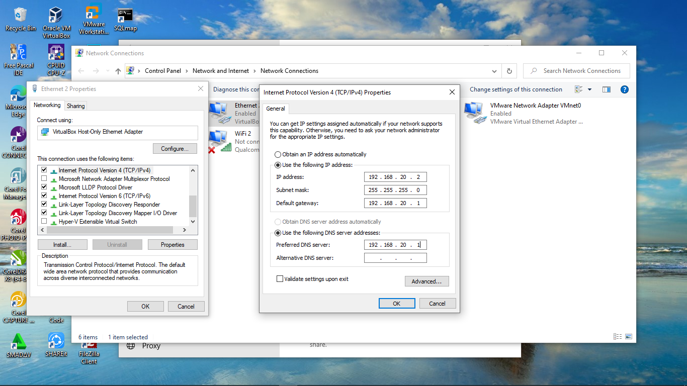16. Jika sudah, ping melalui cmd dengan perintah ping tkj.com dan pastikan hasilnya reply ..... time<xxx TTL=xx
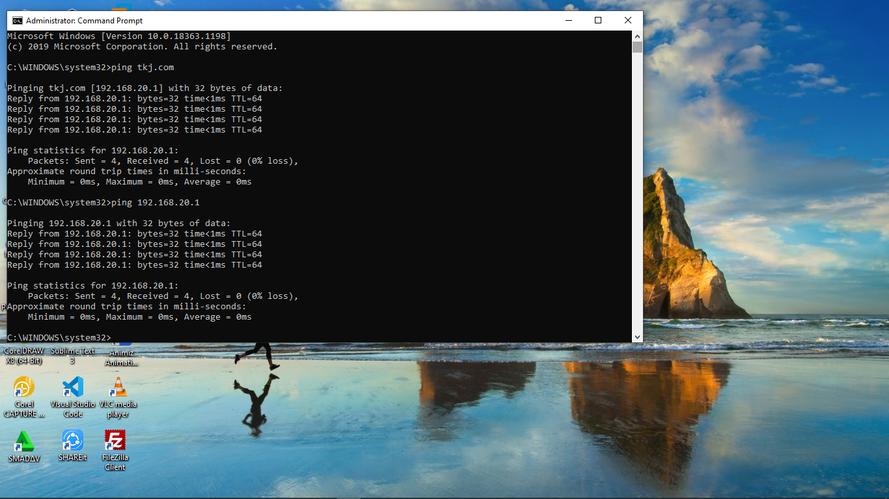Konfigurasi DNS Server menggunakan bind9 pada sistem operasi Debian 10 Buster telah berhasil dikonfigurasi, Selamat mencoba.!
Sekian tutorial ini, semoga bermanfaat ......